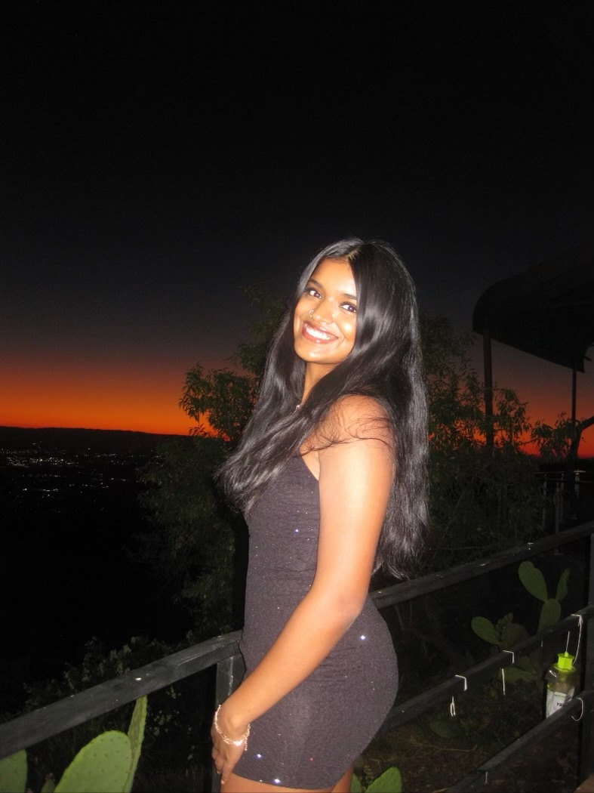

Sadhika Mulagari
Founder and President

Sadhika is a sophomore at UCLA. She founded Med n’ Ed because she realized that, not many people have the same privilege as she is fortunate enough to have, especially in healthcare aspects. She feels that health is one place, nobody should compromise on but are forced to based on various factors. Some fun facts about her is that she loves to dance, fence, and paint. Sadhika has also participated in several other service-related organizations such as Saving Hearts Foundation, SAF Coordinator for Red Cross, outreach coordinator of AMSA, and leader/teacher at InFuse. Sadhika knows that together we can medicate and educate all in need!